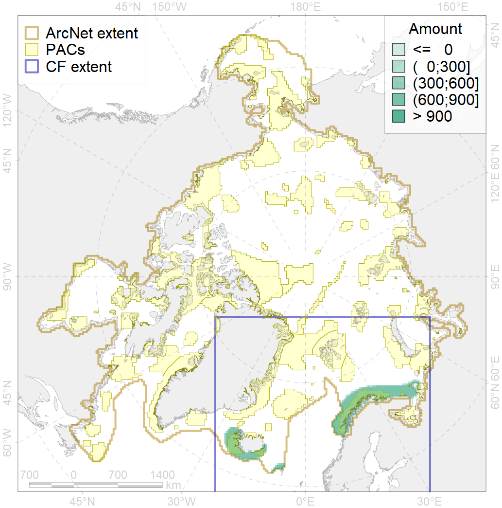
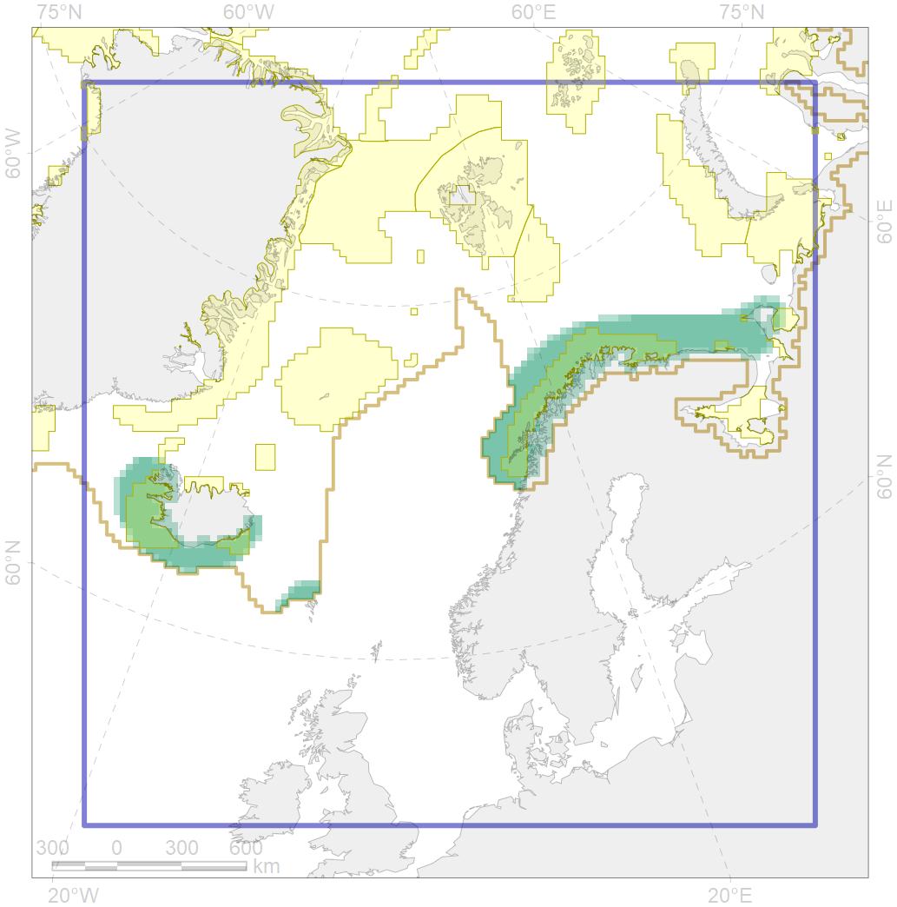

2017

| CF ID | 2017 |
| CF Name | Grey seal distribution range |
| Time Period | 2016 |
| Source(s) | NPI IUCN Red list |
| Seasonality | January-December |
| Depth Horizon | 0-400 m |
| Methodology | Data compilation, expert input |
| Author Name | Irina Trukhanova |
| Notes | |
| Conservation Target Set in the Scenario | 0.06 |
| Conservation Target Achieved in the Scenario | 0.427 (Scenario: 711.4%) |
| PAC ID | Proportion in the PAC | Contribution to ArcNet Target Achievement | PAC’s Contribution to the Achieved Target |
|---|---|---|---|
| 23 | 0.6% | 9.1% | 1.3% |
| 24 | 0.0% | 0.4% | 0.1% |
| 25 | 0.9% | 11.6% | 1.6% |
| 27 | 26.6% | 370.0% | 52.0% |
| 37 | 0.0% | 0.4% | 0.1% |
| 38 | 11.8% | 166.1% | 23.4% |
| 39 | 2.3% | 33.8% | 4.8% |
| inner | 42.3% | 591.5% | 83.2% |
| outer | 55.2% | 119.9% | 16.8% |